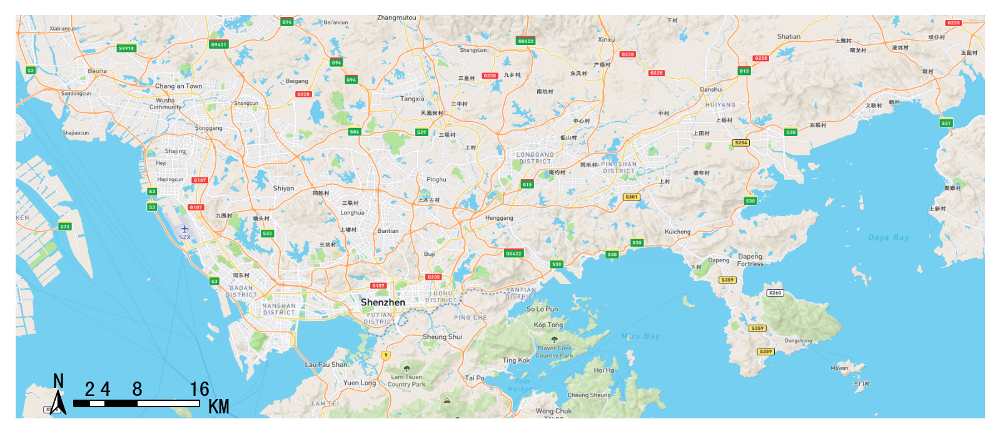
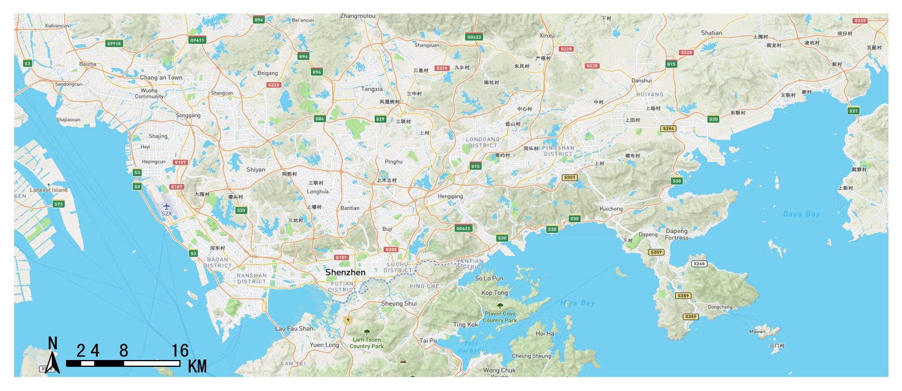
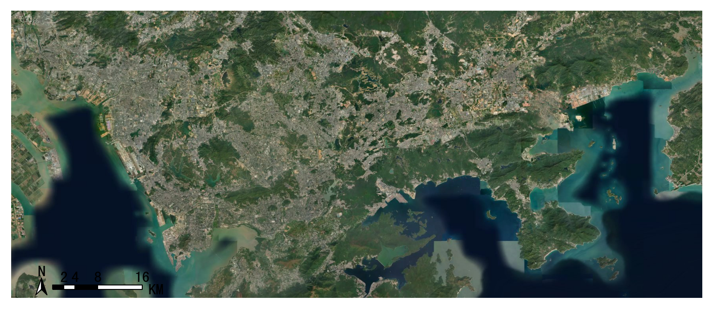
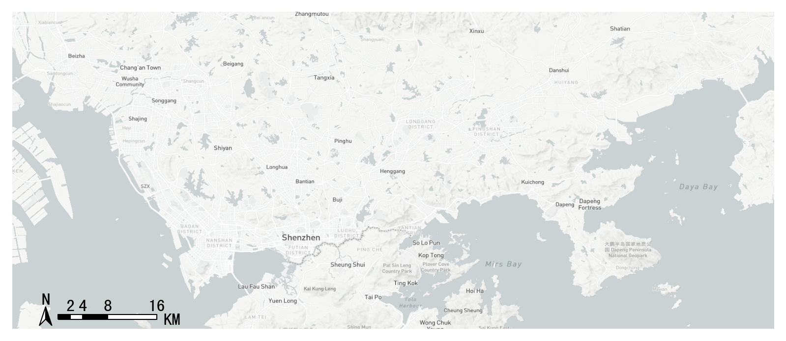
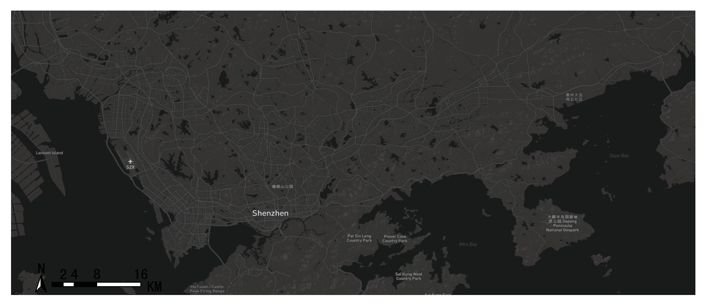
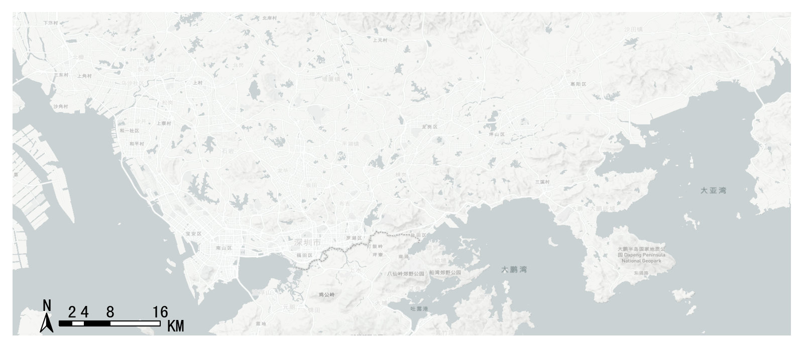
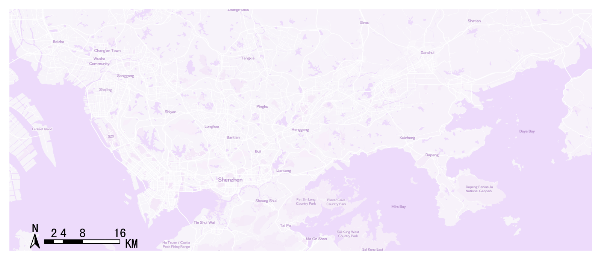
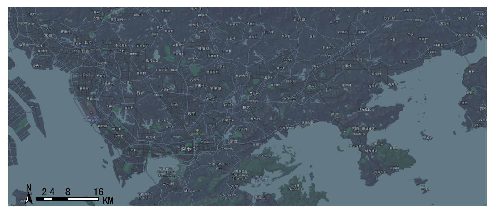
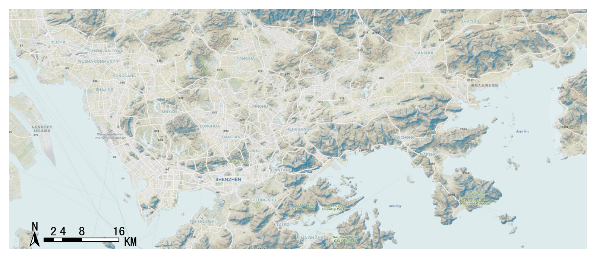
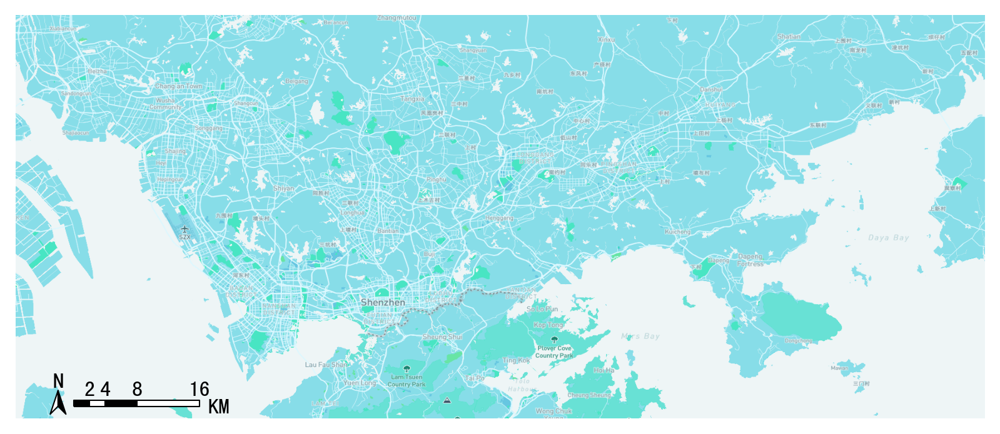

Load the basemap¶
Settings before start¶
import transbigdata as tbd
#用下面代码设置你的mapboxtoken
tbd.set_mapboxtoken('pk.eyxxxxxxxxxx.xxxxxxxxx')#必须在里面设置你申请的token，直接复制此行代码无效！
In addition, you need to set the storage location of a map basemap. When the same location is displayed next time, the map will be read and loaded locally
#设置你的地图底图存储路径
#如果你是linux或者mac系统，路径是这么写，注意最后有一个反斜杠
tbd.set_imgsavepath(r'/Users/xxxx/xxxx/')
#如果是windows系统，路径这么写，最后注意要两个斜杠以防转义
tbd.set_imgsavepath(r'E:\pythonscript\xxx\\')
After setting, the next time you draw the base map, you will create a tileimg folder under the path you set, and put all the base maps in it. Try the following code to see if you can draw the base map successfully
#定义显示范围范围
bounds = [113.6,22.4,114.8,22.9]
#创建图框
import matplotlib.pyplot as plt
fig =plt.figure(1,(8,8),dpi=250)
ax =plt.subplot(111)
plt.sca(ax)
#添加地图底图
tbd.plot_map(plt,bounds,zoom = 11,style = 4)
#添加比例尺和指北针
tbd.plotscale(ax,bounds = bounds,textsize = 10,compasssize = 1,accuracy = 2000,rect = [0.06,0.03],zorder = 10)
plt.axis('off')
plt.xlim(bounds[0],bounds[2])
plt.ylim(bounds[1],bounds[3])
plt.show()

Load the basemap¶
The base map visualization is provided by the plot_map. Ensure that your plot_map version is newer than 0.3.3:
pip install -U plot-map
-
transbigdata.plot_map(plt, bounds, zoom='auto', style=4, printlog=False, styleid='dark')¶
Add the basemap
Input
- boundsList
The drawing boundary of the base map, [lon1,lat1,lon2,lat2] (WGS84 coordinate system), where lon1 and lat1 are the coordinates of the lower left corner and lon2 and lat2 are the coordinates of the upper right corner
- zoomnumber
The larger the magnification level of the base map, the longer the loading time. Generally, the range for a single city is between 12 and 16
- printlogbool
Show log
- stylenumber
The style of map basemap can be 1-10, as follows (ensure that your plot_map version is newer than 0.3.3)
Basemap style 1: streets¶
Basemap style 2: outdoors¶
Basemap style 3: satellite¶
Basemap style 4: light¶
Basemap style 5: dark¶
Basemap style 6: light-ch¶
Basemap style 7: ice creem¶
Basemap style 8: night¶
Basemap style 9: terrain¶
Basemap style 10: basic blue¶
Code example¶
#设定显示范围
bounds = [lon1,lat1,lon2,lat2]
tbd.plot_map(plt,bounds,zoom = 12,style = 4)
Compass and scale¶
-
transbigdata.plotscale(ax, bounds, textcolor='k', textsize=8, compasssize=1, accuracy='auto', rect=[0.1, 0.1], unit='KM', style=1, **kwargs)¶
Add compass and scale for a map
Input
- boundsList
The drawing boundary of the base map, [lon1,lat1,lon2,lat2] (WGS84 coordinate system), where lon1 and lat1 are the coordinates of the lower left corner and lon2 and lat2 are the coordinates of the upper right corner
- textsizenumber
size of the text
- compasssizenumber
size of the compass
- accuracynumber
Length of scale bar (m)
- unitstr
‘KM’,’km’,’M’,’m’, the scale units
- stylenumber
1 or 2, the style of the scale
- rectList
The approximate position of the scale bar in the figure, such as [0.9,0.9], is in the upper right corner
tbd.plotscale(ax,bounds = bounds,textsize = 10,compasssize = 1,accuracy = 2000,rect = [0.06,0.03])